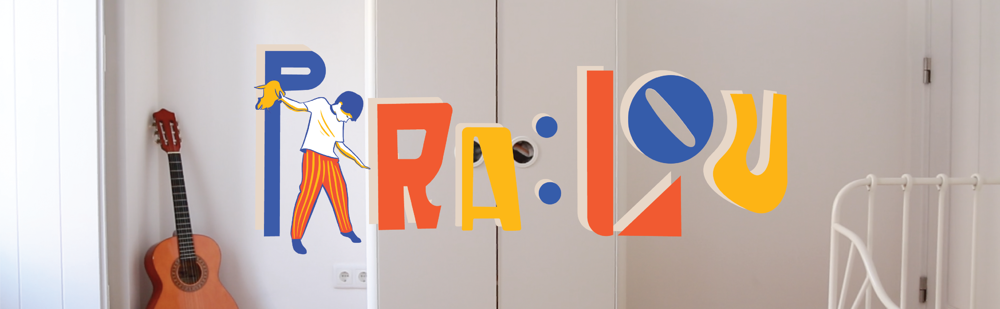
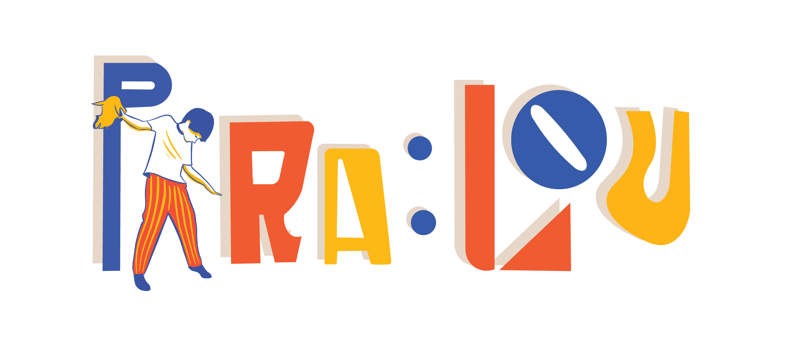
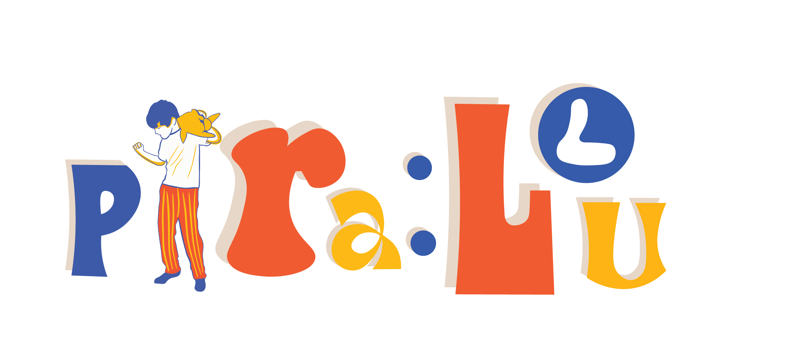
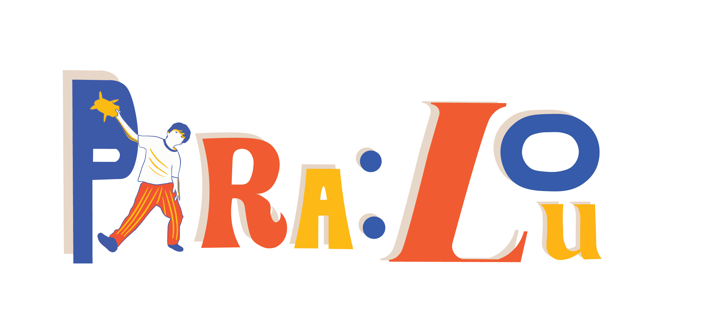
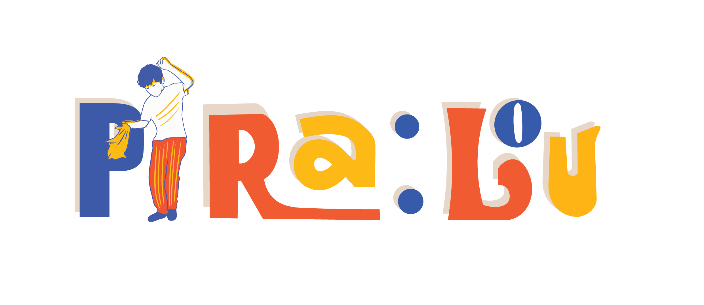
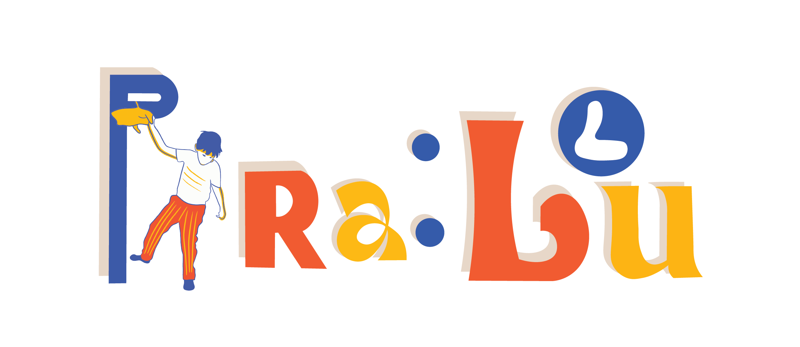
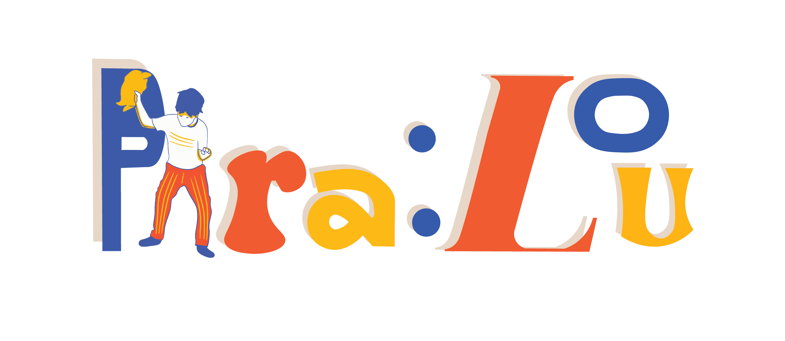
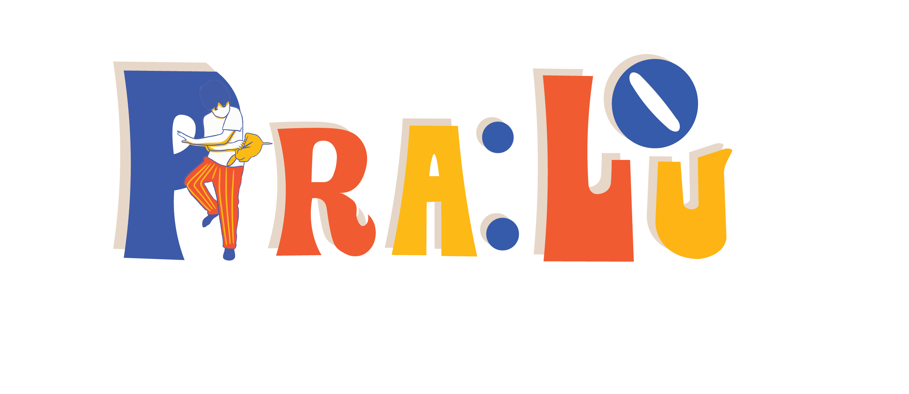

Adobe Illustrator
Adobe Premiere
Adobe Photoshop

The Project (2022)
For my short film project in high school, we had the opportunity to create our own storyline and write the entire script over a span of three weeks. Our group chose to focus on a heartfelt story about a young boy living with his older brother. The plot revolves around the boy's birthday, a day that should be filled with joy, but instead highlights the emotional distance between the siblings. The brother, often absent from the boy's life, leaves a letter and a gift, a teddy bear, as a birthday present. However, the boy, having grown used to being independent due to his brother's absence, feels disconnected from the gift. His closest companion is Xérife Evaristo, a stuffed pig who has become his best friend in the absence of his brother's attention.
Throughout the film, the audience witnesses the boy grappling with his emotions. He projects his feelings of loneliness and frustration onto the teddy bear, a symbol of his brother's neglect, leading to a series of chaotic moments where the boy's inner turmoil spills over. The film builds toward a powerful climax when the older brother returns home, horrified by the mess and finally confronted with the emotional impact his absence has had on his little brother. The short film poignantly explores themes of loneliness, emotional neglect, and the deep desire for connection within families.

To elevate the visual identity of our short film, I decided to create a custom logo for the title. The goal was to enhance the project not only graphically but also to develop a memorable element that could leave an impact, especially in terms of marketing. The logo is designed to reflect the film's themes, and it serves as a focal point in our promotional material. To make the design more dynamic and engaging, the main logo was created with six variations, which are animated together to form a GIF used in the film's opening credits, adding a subtle but effective visual transition.





